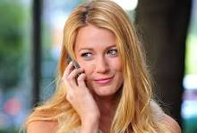
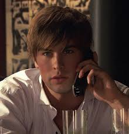
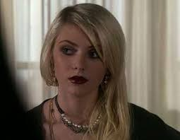
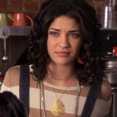
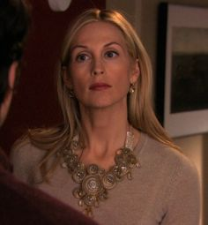
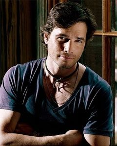

Gossip Girl é uma série de televisão norte-americana de drama adolescente, baseada na série literária homônima da escritora Cecily von Ziegesar. Criada por Josh Schwartz e Stephanie Savage, a série foi originalmente transmitida nos Estados Unidos pela rede de televisão The CW de 19 de setembro de 2007 e 17 de dezembro de 2012, totalizando seis temporadas e 121 episódios. No Brasil, Gossip Girl teve sua estreia em 8 de novembro de 2007 no canal de televisão por assinatura Warner Channel, onde foi exibida até abril de 2010. Em seguida, foi transmitida pelo SBT e pelo Glitz. Em Portugal, a série foi ao ar no extinto Canal Sony e está no ar no canal Biggs.
A história de Gossip Girl acompanha um grupo de adolescentes ricos e privilegiados que frequentam uma escola de elite no Upper East Side de Manhattan. A série é narrada por um blogueiro anônimo conhecido como Gossip Girl, que espalha fofocas e segredos sobre a vida dos personagens. A trama foca nos relacionamentos, dramas e intrigas que acontecem entre esses jovens, enquanto eles tentam descobrir a identidade de Gossip Girl.
A série segue quando Serena van der Woodsen retorna à cidade após ter ficado um ano fora em um internato e se mantido fora do alcance de amigos e conhecidos. Os acontencimentos e histórias de cada personagem são narrados por uma blogueira anônima (voz por Kristen Bell), que atendende pelo pseudônimo "Gossip Girl" (Garota Fofoqueira, em português). Surpresa com a volta da melhor amiga, Blair Waldorf se contenta excluindo socialmente e mantendo distância de Serena depois da perda de contato durante sua ausência. O círculo jovem é completado por, Nate Archibald e seu amigo de infância, Chuck Bass, e os irmãos até então "apagados" Dan Humphrey e Jenny Humphrey, além da amiga de infância de Dan, Vanessa Abrams. Fazendo parte da trama há também o irmão de Serena, Erik, sua mãe Lily van der Woodsen; e Rufus Humphrey, separado de sua esposa Alison, pais de Dan e Jenny. a partir da quinta temporada Jenny Humphrey e Vanessa Abrams não irão mais fazer parte do seriado, talvez algumas participações especiais.
| Ator(a) | Personagem | .... |
|---|---|---|
| Leighton Marissa | Blair Waldorf | |
| Blake Lively | Serena van der Woodsen |  |
| Ed Westwick | Chuck Bass | |
| Penn Badgley | Dan Humphrey | |
| Chace Crawford | Nate Archibald |  |
| Taylor Momsen | Jenny Humphrey |  |
| Michelle Trachtenberg | Georgina Sparks | |
| Jessica Szohr | Vanessa Abrams |  |
| Kelly Rutherford | Lily van der Woodsen |  |
| Matthew Settle | Rufus Humphrey |  |
| Kaylee DeFer | Ivy Dickens | |